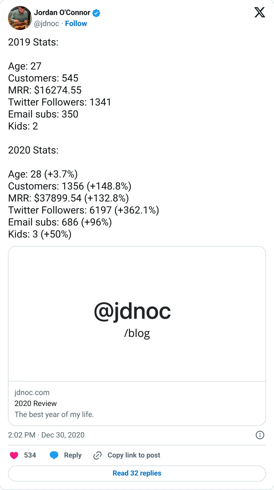
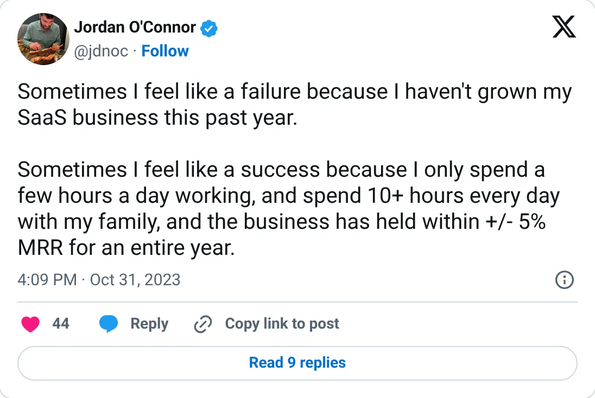

Not a pick
Closet Tools
A real-looking company with a headline you should not plan against.
~$40K MRR (Jan 2021)
Should you build this
The company may be real. The figure on the card is a peak, a stale year, a cash month, or an average. Closet Tools posted figures that are hard to invent casually: $16,274.55 MRR at the end of 2019, $37,899.54 and 1,356 customers at the end of 2020, about $40K MRR on January 12, 2021. In October 2023 the founder said MRR had been flat, within 5%, for a year. So the number was probably real, and it was already old when he said it had stopped growing. It should not be read as this year's revenue.
Cited from the captured posts, shown below: the earliest captured post (Dec 30, 2020): This post is cited for more than one point in the trail: End 2019: $16,274.55 MRR; End 2020: $37,899.54 MRR, 1,356 customers; the latest milestone (Oct 31, 2023) is the source for “MRR flat (±5%) for a year”.
Posts this is based on

This post is cited for more than one point in the trail: End 2019: $16,274.55 MRR; End 2020: $37,899.54 MRR, 1,356 customers
Open on X

MRR flat (±5%) for a year
Open on X
What the product is
Automation Chrome extension for Poshmark resellers (sharing, following, offers), run as a side project with a full-time job.
⚠ Older: last exact figure Jan 2021; founder said MRR was flat in Oct 2023.